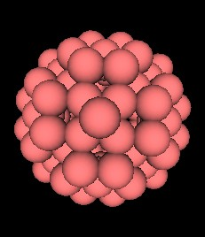
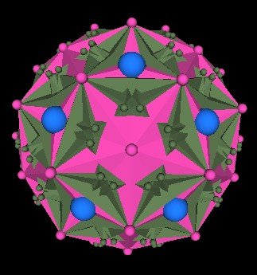

The other major polyhedron that Lynnclaire describes from her near death experiences is a 144 triangular faced polyhedron.
| Fig. 12.1 The 144 Polyhedron |
|
|
|
| Fig. 12.2, 12.3 The 144 Polyhedron | |
It is interesting to note that the 144 Polyhedron is also based on the Cube-Octahedron dual pair.
| Fig. 12.4, 12.5 The Cube and Octahedron in the 144 Polyhedron | |
The next illustration shows the 144 Polyhedron (red) with one of the Octahedron's faces outlined in white and part of the cube face outlined in green.
|
Fig. 12.6 Octa and Cube outlined on the 144 Polyhedron |
In fact, this 144 Polyhedron can be constructed from the Face Centered Cubic (FCC) lattice, which Fuller called the Isotropic Vector Matrix (IVM). That is, all of the 144 Polyhedron's vertices coincide with FCC vertex points.
| Fig. 12.7, 12.8 The 144 Polyhedron in the IVM (FCC lattice) | |
This also means that this polyhedron can be constructed from the closest packing of spheres.
|  | |
| Fig. 12.9, 12.10 The 144 Polyhedron made from closest packing of spheres | |
Recall that when we first introduced the 120 Polyhedron, we rotated 4 cubes, leaving a 5th cube stationary. We then added the 5 Cube's duals: the Octahedron. The 144 Polyhedron has only one Cube-Octahedron dual pair.
What happens when we take 5 of these 144 Polyhedra and rotate 4 of them, as we did with the cubes, by an angular amount of 44.47751219°(approximately)? As before, we get 62-12=50 vertices of the 120 Polyhedron, the "missing" 12 vertices corresponding to the Icosahedron. However, there are also 120 additional external vertices from the 5 144 Polyhedra which do not coincide with any of the 120 Polyhedron's vertices. The next illustration shows these additional vertices.
|  |
|
Fig. 12.11 The 120 additional external vertices (green) |
In this illustration, the pink (polyhedron and spheres) mark the 120 Polyhedron. The green marks the 5 144 Polyhedron, and the blue marks the vertices of the regular Dodecahedron.
Since there are 10 green spheres within the regular Dodecahedron face region, and knowing that there are 12 Dodecahedron faces, there are then 12x10=120 vertices of the 144 Polyhedra showing through the 120 Polyhedron.
If we let the 4 144 Polyhedron continuously rotate, we get a movie in which it appears that surface waves are moving over the 120 Polyhderon.

|
|
Fig. 12.12 Surface waves over the 120 Polyhedron |
As with the 120 Polyhedron, the 144 clearly defines 9 planes on which all the vertices occur. The orientation for this counting of planes is the same as for the 120 Polyhedron. That is, the z-axis runs through opposite vertices of the Octahedron. (Of course other planes are also defined by the model.) Unlike the 120 Polyhedron case, each of the 9 planes are separated by an equal distance from its neighbor planes.
|
Fig. 12.13 The 9 vertex planes of the 144 Polyhedron |
The distance between each plane, at the same scale as the 120 Polyhedron, so that the Octahedra in the 2 polyhedra are the same size, is given by
Earlier, I described how 5 Octahedra/Jitterbugs (4 of which are rotated with respect to the 5th) play a part in the construction of the 120 Polyhedron. It should be noted that the 5 rotated Octahedra alone defines another, different 120 triangular faced polyhedron. The image below shows the 5 rotated Octahedra with a slightly different orientation and color scheme. We can see that around each vertex of the Octahedra are 4 triangles. An Octahedron has 6 vertices. Adding up all the triangular faces we get a total of 5x6x4=120.

5 Intersecting Octa define a 120 polyhedron. |
It looks like there are again 30 diamond "bases" (outlined in white) as there is with the original 120 Polyhedron. However, this is not the case because the diamond base is not planer. We can see this by looking at another diamond base. The point "A" is not in the same plane as the other 3 vertices of the "diamond".
|
A Diamond Base? |
No. Not in same plane. |
Consider one edge of one of the Octahedra (purple Octahedron). It is intersected in 2 places by 4 octahedra. We consider one intersection point (B) along the Octahedron's edge (AC).
|
One Octahedron edge and intersection point. |
It turns out that the ratio AC:BC is the Golden Ratio p.
We can construct 2 equilateral triangles by connecting the intersection points. One triangle is rotated clockwise and the other is rotated counter clockwise with respect to the Octahedron's triangle.
|
Small triangle rotated CW. |
Small triangle rotated CCW. |
Each of these 2 cases define another Icosahedron.
|
Several edges if the Icosahedron. |
Several edges of the Icosahedron. |
If we cut these 5 Jitterbugs in half and remove the front half, we can see into the system. We discover that during the Jitterbug motion a truncated Icosahedron position occurs. However, not all of the edges are of equal length. This polyhedron has 12 regular pentagons, 20 irregular hexagons and 60 vertices. Molecules in this polyhedral configuration are call "Buckminsterfullerenes".
|
Fig. 7.10 Buckyball defined during the 5 Jitterbug's motion |
When we take an Octahedron, add in 5 intersecting Tetrahedra and the regular Dodecahedron, we get the following illustrations.

5 intersecting Cubes and Octa. |

5 intersecting Cubes and Octa. |
It appears that there are 12 new mini regular Dodecahedra defined (shown here in blue). (This needs to be confirmed through calculation.)
Lynnclaire reports that the 120 Polyhedron she experienced is not a static polyhedron. It "breaths" or expands into an ellipsoid shape. Could it be that the ellipsoid she experienced is the Golden Ellipsoid having its axes in the Golden Ratio?
|
Golden Ellipsoid |